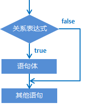

03-switch&循环语句
本文最后更新于：2022年8月29日 上午
本文是黑马程序员的Java入门基础视频教程的配套官方笔记，仅供学习使用
1、流程控制语句（应用）
在一个程序执行的过程中，各条语句的执行顺序对程序的结果是有直接影响的。所以，我们必须清楚每条语句的执行流程。而且，很多时候要通过控制语句的执行顺序来实现我们想要的功能。
1.1 流程控制语句分类
顺序结构
分支结构(if, switch)
循环结构(for, while, do…while)
1.2 顺序结构
顺序结构是程序中最简单最基本的流程控制，没有特定的语法结构，按照代码的先后顺序，依次执行，程序中大多数的代码都是这样执行的。

1.3 分支结构：if语句
if语句格式1
1 | |
执行流程：
①首先计算关系表达式的值
②如果关系表达式的值为true就执行语句体
③如果关系表达式的值为false就不执行语句体
④继续执行后面的语句内容

示例：
1 | |
if语句格式2
1 | |
执行流程：
①首先计算关系表达式的值
②如果关系表达式的值为true就执行语句体1
③如果关系表达式的值为false就执行语句体2
④继续执行后面的语句内容

示例：
1 | |
if语句案例：奇偶数
需求：任意给出一个整数，请用程序实现判断该整数是奇数还是偶数，并在控制台输出该整数是奇数还是偶数。
分析：
①为了体现任意给出一个整数，采用键盘录入一个数据
②判断整数是偶数还是奇数要分两种情况进行判断，使用if..else结构
③判断是否偶数需要使用取余运算符实现该功能 number % 2 == 0
④根据判定情况，在控制台输出对应的内容
1 | |
if语句格式3
1 | |
执行流程：
①首先计算关系表达式1的值
②如果值为true就执行语句体1；如果值为false就计算关系表达式2的值
③如果值为true就执行语句体2；如果值为false就计算关系表达式3的值
④…
⑤如果没有任何关系表达式为true，就执行语句体n+1。

示例：键盘录入一个星期数(1,2,...7)，输出对应的星期一，星期二，...星期日
1 | |
if语句格式3案例：
需求：小明快要期末考试了，小明爸爸对他说，会根据他不同的考试成绩，送他不同的礼物，假如你可以控制小明的得分，请用程序实现小明到底该获得什么样的礼物，并在控制台输出。
分析：
①小明的考试成绩未知，可以使用键盘录入的方式获取值
②由于奖励种类较多，属于多种判断，采用if...else...if格式实现
③为每种判断设置对应的条件
④为每种判断设置对应的奖励
1.4 分支结构：switch语句
switch语句结构（掌握）
格式
1
2
3
4
5
6
7
8
9
10
11
12switch (表达式) {
case 1:
语句体1;
break;
case 2:
语句体2;
break;
...
default:
语句体n+1;
break;
}执行流程：
- 首先计算出表达式的值
- 其次，和case依次比较，一旦有对应的值，就会执行相应的语句，在执行的过程中，遇到break就会结 束。
- 最后，如果所有的case都和表达式的值不匹配，就会执行default语句体部分，然后程序结束掉。
switch语句练习-春夏秋冬（应用）
- 需求：一年有12个月，分属于春夏秋冬4个季节，键盘录入一个月份，请用程序实现判断该月份属于哪个季节，并输出。
- 运行结果：
1 | |
- 示例代码：
1 | |
- 注意：如果switch中得case，没有对应break的话，则会出现case穿透的现象。
1.5 循环结构：for循环
for循环结构（掌握）
循环：
循环语句可以在满足循环条件的情况下，反复执行某一段代码，这段被重复执行的代码被称为循环体语句，当反复 执行这个循环体时，需要在合适的时候把循环判断条件修改为false，从而结束循环，否则循环将一直执行下去，形 成死循环。
for循环格式：
1 | |
格式解释：
- 初始化语句： 用于表示循环开启时的起始状态，简单说就是循环开始的时候什么样
- 条件判断语句：用于表示循环反复执行的条件，简单说就是判断循环是否能一直执行下去
- 循环体语句： 用于表示循环反复执行的内容，简单说就是循环反复执行的事情
- 条件控制语句：用于表示循环执行中每次变化的内容，简单说就是控制循环是否能执行下去
执行流程：
①执行初始化语句
②执行条件判断语句，看其结果是true还是false
如果是false，循环结束
如果是true，继续执行
③执行循环体语句
④执行条件控制语句
⑤回到②继续
for循环练习-输出数据（应用）
- 需求：在控制台输出1-5和5-1的数据
- 示例代码：
1 | |
for循环练习-求和（应用）
- 需求：求1-5之间的数据和，并把求和结果在控制台输出
- 示例代码：
1 | |
- 本题要点：
- 今后遇到的需求中，如果带有求和二字，请立即联想到求和变量
- 求和变量的定义位置，必须在循环外部，如果在循环内部则计算出的数据将是错误的
for循环练习-求偶数和（应用）
- 需求：求1-100之间的偶数和，并把求和结果在控制台输出 }
- 示例代码：
1 | |
for循环练习-水仙花（应用）
- 需求：在控制台输出所有的“水仙花数”
- 解释：什么是水仙花数？
- 水仙花数，指的是一个三位数，个位、十位、百位的数字立方和等于原数
- 例如
153 3*3*3 + 5*5*5 + 1*1*1 = 153
- 例如
- 水仙花数，指的是一个三位数，个位、十位、百位的数字立方和等于原数
- 思路：
- 获取所有的三位数，准备进行筛选，最小的三位数为100，最大的三位数为999，使用for循环获取
- 获取每一个三位数的个位，十位，百位，做if语句判断是否是水仙花数
- 示例代码
1 | |
for循环练习-统计水仙花数个数（应用）
- 需求：统计“水仙花数”一共有多少个，并在控制台输出个数
- 示例代码：
1 | |
- 本题要点：
- 今后如果需求带有统计xxx，请先想到计数器变量
- 计数器变量定义的位置，必须在循环外部
1.6 循环结构： while循环
while结构（掌握）
while循环完整格式：
1
2
3
4
5初始化语句;
while (条件判断语句) {
循环体语句;
条件控制语句;
}while循环执行流程：
①执行初始化语句
②执行条件判断语句，看其结果是true还是false
如果是false，循环结束
如果是true，继续执行
③执行循环体语句
④执行条件控制语句
⑤回到②继续
示例代码：
1 | |
while循环练习-珠穆朗玛峰（应用）
- 需求：世界最高山峰是珠穆朗玛峰(8844.43米=8844430毫米)，假如我有一张足够大的纸，它的厚度是0.1毫米。请问，我折叠多少次，可以折成珠穆朗玛峰的高度?
- 示例代码：
1 | |
1.7 循环结构：do-while循环
do...while循环结构（掌握）
完整格式：
1
2
3
4
5初始化语句;
do {
循环体语句;
条件控制语句;
}while(条件判断语句);执行流程：
① 执行初始化语句
② 执行循环体语句
③ 执行条件控制语句
④ 执行条件判断语句，看其结果是true还是false
如果是false，循环结束
如果是true，继续执行
⑤ 回到②继续
示例代码：
1 | |
1.8 三种循环的区别（理解）
- 三种循环的区别
- for循环和while循环先判断条件是否成立，然后决定是否执行循环体（先判断后执行）
- do...while循环先执行一次循环体，然后判断条件是否成立，是否继续执行循环体（先执行后判断）
- for循环和while的区别
- 条件控制语句所控制的自增变量，因为归属for循环的语法结构中，在for循环结束后，就不能再次被访问到了
- 条件控制语句所控制的自增变量，对于while循环来说不归属其语法结构中，在while循环结束后，该变量还可以继续使用
- 死循环（无限循环）的三种格式
- for(;;){}
- while(true){}
- do {} while(true);
1.9 跳转控制语句（掌握）
- 跳转控制语句（break）
- 跳出循环，结束循环
- 跳转控制语句（continue）
- 跳过本次循环，继续下次循环
- 注意： continue只能在循环中进行使用！
1.10 循环嵌套（理解）
循环嵌套概述：在循环中，继续定义循环
示例代码：
1
2
3
4
5
6
7
8
9public static void main(String[] args) {
//外循环控制小时的范围，内循环控制分钟的范围
for (int hour = 0; hour < 24; hour++) {
for (int minute = 0; minute < 60; minute++) {
System.out.println(hour + "时" + minute + "分");
}
System.out.println("--------");
}
}理解：
- 请反复理解这句话（整个内循环，就是外循环的一个循环体，内部循环体没有执行完毕，外循环是不会继续向下执行的）
结论：
- 外循环执行一次，内循环执行一圈
1.11 Random
Random产生随机数（掌握）
概述：
- Random类似Scanner，也是Java提供好的API，内部提供了产生随机数的功能
- API后续课程详细讲解，现在可以简单理解为Java已经写好的代码
- Random类似Scanner，也是Java提供好的API，内部提供了产生随机数的功能
使用步骤：
导入包
import java.util.Random;
创建对象
Random r = new Random();
产生随机数
int num = r.nextInt(10);
解释： 10代表的是一个范围，如果括号写10，产生的随机数就是0-9，括号写20，参数的随机数则是0-19
示例代码：
1 | |
Random练习-猜数字（应用）
需求：
程序自动生成一个1-100之间的数字，使用程序实现猜出这个数字是多少？
当猜错的时候根据不同情况给出相应的提示
A. 如果猜的数字比真实数字大，提示你猜的数据大了
B. 如果猜的数字比真实数字小，提示你猜的数据小了
C. 如果猜的数字与真实数字相等，提示恭喜你猜中了
示例代码：
1 | |
作者水平有限，有错误请不吝指正，转载请注明出处！